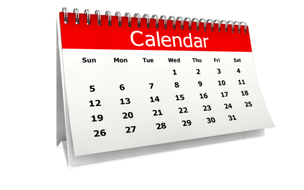

Latest News
Marseille, a Mediterranean jewel with a thousand facets, continues to vibrate to the rhythm of its captivating history and dynamic developments.
Recently, the city celebrated the inauguration of new cultural spaces, fusing tradition and modernity. The picturesque lanes of the Old Port come
alive with arts festivals, while emerging districts such as La Joliette are transformed into hubs of innovation.
The urban renewal project is expanding, reshaping the face of the city with more sustainable infrastructures and welcoming green spaces.
Marseille, a veritable cultural melting pot, has also played host to a number of high-profile sporting events, reinforcing its status as a cosmopolitan city.
Marseille's already renowned gastronomy has been enriched with new gourmet addresses, offering visitors an unforgettable culinary experience.
The locals, proud of their local identity, continue to share their passion for bouillabaisse and Mediterranean flavours.
Marseille's nightlife is in full swing with the opening of new bars and clubs, where conviviality mingles with music.
In short, Marseille continues to reinvent itself while preserving its authenticity, offering residents and visitors a unique experience
in the heart of the Mediterranean. Stay tuned so you don't miss out on any of the latest nuggets from this bustling city!
Events
The eternally vibrant city of Marseille is set to host a series of captivating events that will ignite the spirits of locals and visitors alike.
First of all, the famous cultural festival "Marseille en Scènes" promises to set the city's neighbourhoods ablaze with vibrant artistic performances,
spellbinding music and inspiring exhibitions.
Sports fans won't be left out with the international beach soccer tournament, which will transform the city's iconic beaches into thrilling sporting arenas.
The streets of the Panier district will resound to the sound of drums during the traditional carnival parade, celebrating Marseille's diversity.
Food lovers will have the opportunity to immerse themselves in the delicious Fête de la Bouillabaisse, where local chefs will compete to offer modern variations
on this emblematic dish. At the same time, the "Marseille Gourmande" festival will tantalise taste buds with an array of local flavours.
Whether you're passionate about music, art, sport or gastronomy, Marseille invites you to plunge into the heart of its festivities and experience some
unforgettable moments. Keep your eyes peeled for details and get ready to immerse yourself in the heady energy of the Phocaean city!

Weather
Whether you're a resident of Marseilles or a visitor looking to discover new things, knowing the weather forecast is essential for planning your days in the city.
The next few days are set to be sunny and mild.
Expect sunny days with pleasant temperatures of between 20 and 25 degrees Celsius. Gentle breezes from the Mediterranean Sea will add a refreshing touch,
ideal for strolling along the Old Port or relaxing on iconic beaches such as the Plage des Catalans.
The evenings promise to be mild, perfect for dining al fresco in the charming streets of Le Panier or enjoying an ice cream on the Corniche while admiring the
sunset over the sea.
Make sure you bring sun protection, as the sun will be out. For water sports enthusiasts, conditions will be optimal, with calm seas and water temperatures inviting you to go for a swim.
In short, Marseille's skies promise sunny days, ideal for exploring the city, enjoying outdoor activities and savouring Mediterranean cuisine on the terrace. Take the time to plan your escapades under these radiant skies and make the most of your stay in Marseille!

Calendar
Events calendar in Marseille - December
Monday 11 December: An enchanting musical evening at the Théâtre de la Criée, featuring talented local artists.
A magical moment where the music will resonate within the walls steeped in history of this emblematic venue.
Saturday 16 December: The streets of the Old Port will come alive with the Christmas market, offering a warm and festive atmosphere.
Discover local crafts, sample seasonal specialities and immerse yourself in the magic of Christmas in the heart of Marseille.
Wednesday 20 December: A dazzling light show will illuminate the Canebière, transforming the city's main avenue into a fairytale setting.
A not-to-be-missed visual experience to celebrate the festive season.
Sunday 24 December: Christmas Eve will be marked by special entertainment on the beaches, where locals and visitors alike
will gather to celebrate the spirit of Christmas with bonfires, carols and friendly get-togethers.
Friday 29 December: End the year in style with the fireworks show on the Corniche,
offering a panoramic view of the fireworks that will light up the skies over Marseille to welcome in the New Year.
Keep an eye on our calendar to make sure you don't miss out on any of the exciting events in Marseille this month.
May every day be a new opportunity to discover the cultural and festive wealth of this Mediterranean city!